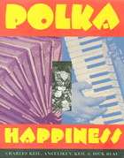

<body bgcolor="#FFFFFF" text="#000000" link="#0000FF" vlink="#CC0000" alink="#CC0000"><center><hr width="350" size="1" align="center" noshade>Interviews and photographs celebrate America's rollicking polka culture<hr width="350" size="1" align="center" noshade><p><a href="https://cdcshoppingcart.uchicago.edu/Cart/ChicagoBook.aspx?ISBN=9780877228196&&PRESS=temple" target="_top">Buy this book!</a> | <a href="https://cdcshoppingcart.uchicago.edu/Cart/Cart.aspx?PRESS=temple" target="_top">View Cart</a> | <a href="https://cdcshoppingcart.uchicago.edu/Cart/Cart.aspx?PRESS=temple" target="_top">Check Out</a></p><p></p></center><!--none//--><h1>Polka Happiness</h1>
<h3>Charles Keil, Angeliki V. Keil and Dick Blau</h3>
<P>cloth 0-87722-819-1 $43.50, Oct 92, <FONT COLOR=#990033>Out of Stock Unavailable</FONT>
<br>paper 1-56639-462-7 $26.95, Apr 96, <FONT COLOR=#990033>Out of Stock Unavailable</FONT>
<BR> 288 pp
8x10
150&nbsp;halftones
</P><BLOCKQUOTE><I>"[A]n inspiring account, with strikingly eloquent photographs . . . based on material collected over twenty years. . . . This is research </i>con amore<i>."</I>
<br>&#151<b><i>Popular Music</i></b><I></I></BLOCKQUOTE>
<p>Celebrating the lively dance music that draws together generations of Polish Americans, <I>Polka Happiness</I> captures the energy, excitement, and shared sense of belonging embodied in polka sociability. With rich descriptive material and 150 historical and contemporary illustrations, the book focuses on the musicians, the fans and the cultural institutions that keep the polka party going. From family gatherings and weddings to local fan clubs, night spots and churches to national and regional festivals, the polka scene is a year-round carnival, full of high jinks, hilarity, ethnic pride and tears&#151an intensely felt experience drawn from sources deep in Polish America.
<p>The testimony of musicians and fans, old timers and young enthusiasts, tells how polka culture has resisted the melting pot for more than a century. Interviews, memorabilia and photographs spotlight the stars of the polka world&#151Li'l Wally, Walt Solek, Eddie Blazonczyk, Frankie Yankovic, the Dyna-Tones&#151as well as the many regional favorites in Buffalo, Milwaukee and Chicago that have delighted millions of fans.
<p><I>Polka Happiness</I> chronicles the immense popularity of the music in nineteenth century Europe and its enduring popularity in the United States. After tracing the history of polka's spread throughout the world, the authors focus on the emergence and intense rivalry of the Chicago and Eastern styles in the United States. The book also traces the role of the International Polka Association in establishing networks, promoting events and providing an environment in which Polish Americans can celebrate and nourish their cultural heritage.
<p>For twenty years, the authors have been part of the social world of polka music and dancing in the bars, church halls and ballrooms of Rust Belt America; their exuberant descriptions reflect the enthusiasm of wholehearted participants.
<BR>&nbsp;<h2>Reviews</h2>
<p><I>"The collection of 150 color and b&w photos of Poles having the time of their lives at weddings, nightclubs, festivals and parties needs only the accompaniment of the accordion to make the experience complete for readers."</I>
<br>&#151<b><I>Publishers Weekly</I></b>
<p><I>"[A] definitive look at the music and the colorful, high-octane cast of polka musicians and accordion-happy fans."</I>
<br>&#151<b><I>Milwaukee Sentinel</I></b>
<p><I>"The sensitive insights of the Keils in a very readable text and the lively photographs by Blau capture the dynamic spirit of Polish Americans who would rather dance than disappear."</I>
<br>&#151<b><I>Polish-American Journal</I></b>
<BR>&nbsp;<h2>Contents</h2><P>
<p>Preface
<br>Acknowledgments
<br>Introduction
<p><b>Part I: Polka Time: A History of Polish-American Polkas</b>
<br>1. Made in America
<br>2. From Eastern to Chicago Style
<p><b>Part II: Polka Movement: The International Polka Association</b>
<br>3. Organizing a Cultural Network
<br>4. An Annual Ritual
<p><b>Part III: Polka Place: The Polk Scene in Two Cities</b>
<br>5. Milwaukee
<br>6. Buffalo
<p>Epilogue
<br>Notes
<br>Select Discography
<br>Permissions
<br>Name Index
</P><BR>&nbsp;<H2>About the Author(s)</H2>
<P><B>Charles Keil</B> is Professor of American Studies at State University of New York, Buffalo, and the author of <I>Tiv Song</I> and <I>Urban Blues</I>.</P>
<P><b>Angeliki V. Keil</b> is a writer and researcher and the compiler of an autobiography of Markos Vamvakaris.</P>
<P><b>Dick Blau</b> is Professor of Film at the University of Wisconsin-Milwaukee.</P>
<BR><H2>Subject Categories</H2>
<p><A HREF="/tempress/general.html" TARGET="_top">General Interest</a>
<BR><A HREF="/tempress/american.html" TARGET="_top">American Studies</a>
<BR><A HREF="/tempress/art.html" TARGET="_top">Art and Photography</a>
</p>
<BR><h2 class="inpageheading">In the series</H2>
<P><I><a href="http://www.temple.edu/tempress/visual.html" onMouseOver="window.status='Click for other books in this series!'; return true;" onMouseOut="window.status=''; return true;" target="_top">Visual Studies</a></i>, edited by Douglas Harper.
</p><p><I>Visual Studies</I>, edited by Douglas Harper, will consist of a broad range of books that regard photography, film, and other visual media as vehicles for exploring social and cultural themes. We are developing a series of illustrated books that draw on photographs as primary documents and that include a substantial analytic text; however, we will also consider unillustrated manuscripts on visual subjects. Douglas Harper is a photographer and sociologist who teaches at Potsdam College of the State University of New York.</p>
<p align="center"><a href="https://cdcshoppingcart.uchicago.edu/Cart/ChicagoBook.aspx?ISBN=9780877228196&&PRESS=temple" target="_top">Buy this book!</a> | <a href="https://cdcshoppingcart.uchicago.edu/Cart/Cart.aspx?PRESS=temple" target="_top">View Cart</a> | <a href="https://cdcshoppingcart.uchicago.edu/Cart/Cart.aspx?PRESS=temple" target="_top">Check Out</a></p><p><font face="Arial" size="1"><a href="copyright.html" onMouseOver="window.status='Web Copyright Policy';return true;" onMouseOut="window.status=''" title="Web Copyright Policy">&copy;</a> 2015 <a href="http://www.temple.edu" target="new" onMouseOver="window.status='Link to Temple University home page';return true;" onMouseOut="window.status=''" title="Link to Temple University home page">Temple University</a>. All Rights Reserved. http://www.temple.edu/tempress/titles/751_reg.html</font></p>